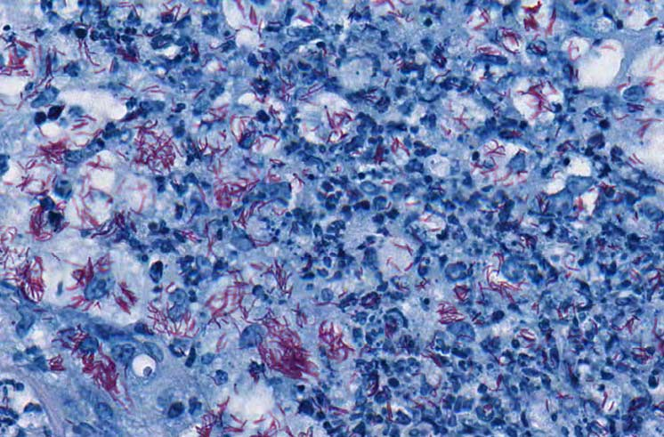

Tuberculosis Diagnosis
Dr. Gillian Beamer leads a team that is generating a platform to develop a point-of-care test for specific, sensitive, direct, and rapid detection of TB. The long-term, final outcome will be a simple, hand-held, temperature stable test for TB.
Read MoreReducing Water-Associated Disease
Dr. Elena Naumova leads a team that aims to reduce the public health burden of water-associated infectious diseases by addressing distinct populations and microbes in communities in India and Ghana.
Read MoreReducing Water-Associated Disease
Dr. Elena Naumova leads a team that aims to reduce the public health burden of water-associated infectious diseases by addressing distinct populations and microbes in communities in India and Ghana.
Read More